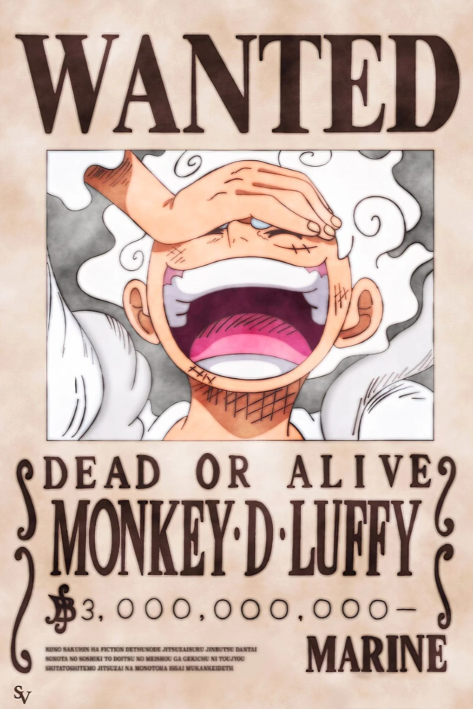
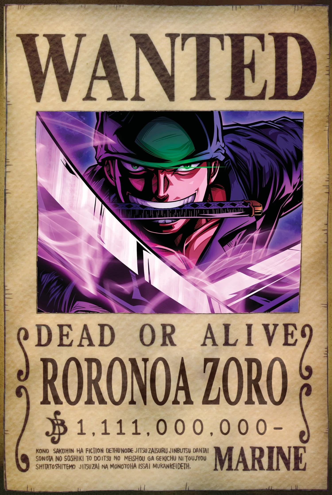
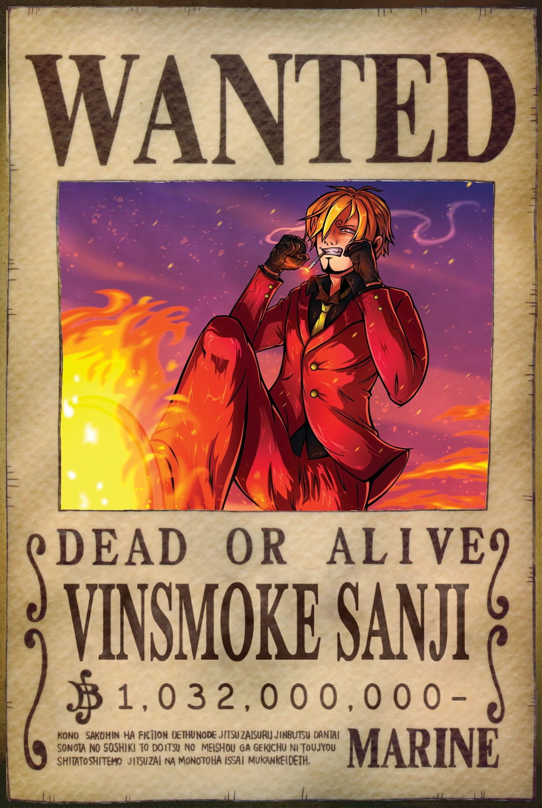

Monkey D. Luffy / Joy Boy
Monkey D. Luffy er kafteinn strá-hatta sjóræningjanna og er sterkasti í liðinu sínu.
Luffy ætlar að finna fjarsjóðinn "One Piece" og verða konungur sjóræningjanna.

Monkey D. Luffy er kafteinn strá-hatta sjóræningjanna og er sterkasti í liðinu sínu.
Luffy ætlar að finna fjarsjóðinn "One Piece" og verða konungur sjóræningjanna.

Roronoa Zoro var fyrstur til að verða ráðinn í lið með Luffy, hann hefur 3 sverð sem hann berst með og er næststerkasti í liðinu.
Zoro er besti vinur Luffy og myndi gera hvað sem er fyrir hann, einnig ætlar hann að verða besti sverðsmaður í heiminum.

Vinsmoke sanji var sá fjórði til að ganga í lið með stráhattar sjóræningjunum, hann notar bara fæturnar sína til að berjast og er á eftir Zoro í styrkleika.
Sanji ætlar að verða besti kokkur í heimi, enda er hann kokkurinn á skipi þeirra og er mjög góður í því.
